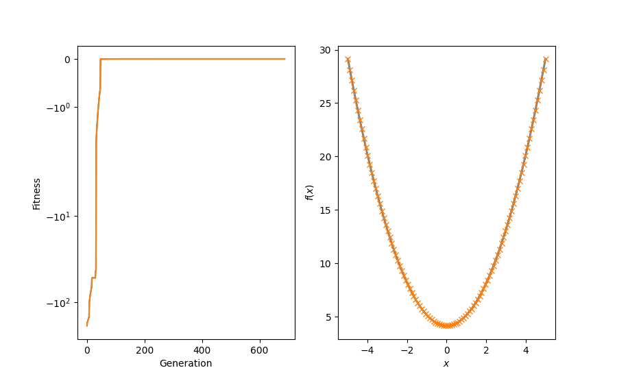

<!DOCTYPE html>
<html class="writer-html5" lang="en" >
<head>
  <meta charset="utf-8">
  
  <meta name="viewport" content="width=device-width, initial-scale=1.0">
  
  <title>Example for differential evolutionary regression &mdash; hal-cgp 0.2.0dev documentation</title>
  

  
  <link rel="stylesheet" href="../_static/css/msmb.css" type="text/css" />
  <link rel="stylesheet" href="../_static/pygments.css" type="text/css" />
  <link rel="stylesheet" href="../_static/gallery.css" type="text/css" />
  <link rel="stylesheet" href="../_static/gallery-binder.css" type="text/css" />
  <link rel="stylesheet" href="../_static/gallery-dataframe.css" type="text/css" />

  
  
  
  

  
  <!--[if lt IE 9]>
    <script src="../_static/js/html5shiv.min.js"></script>
  <![endif]-->
  
    
      <script type="text/javascript" id="documentation_options" data-url_root="../" src="../_static/documentation_options.js"></script>
        <script src="../_static/jquery.js"></script>
        <script src="../_static/underscore.js"></script>
        <script src="../_static/doctools.js"></script>
        <script src="../_static/language_data.js"></script>
        <script src="../_static/js/versions.js"></script>
    
    <script type="text/javascript" src="../_static/js/theme.js"></script>

    
    <link rel="index" title="Index" href="../genindex.html" />
    <link rel="search" title="Search" href="../search.html" />
    <link rel="next" title="Example for evolutionary regression" href="example_evo_regression.html" />
    <link rel="prev" title="Example for evolutionary regression with parametrized nodes" href="example_parametrized_nodes.html" /> 
</head>

<body class="wy-body-for-nav">

   
  <div class="wy-grid-for-nav">
    
    <nav data-toggle="wy-nav-shift" class="wy-nav-side">
      <div class="wy-side-scroll">
        <div class="wy-side-nav-search" >
          

          
            <a href="../index.html" class="icon icon-home" alt="Documentation Home"> hal-cgp
          

          
          </a>

          
            
            
          

          
<div role="search">
  <form id="rtd-search-form" class="wy-form" action="../search.html" method="get">
    <input type="text" name="q" placeholder="Search docs" />
    <input type="hidden" name="check_keywords" value="yes" />
    <input type="hidden" name="area" value="default" />
  </form>
</div>

          
        </div>

        
        <div class="wy-menu wy-menu-vertical" data-spy="affix" role="navigation" aria-label="main navigation">
          
            
            
              
            
            
              <ul class="current">
<li class="toctree-l1"><a class="reference internal" href="../installation.html">Installation</a></li>
<li class="toctree-l1"><a class="reference internal" href="../basic_usage.html">Basic usage</a></li>
<li class="toctree-l1 current"><a class="reference internal" href="index.html">Examples</a><ul class="current">
<li class="toctree-l2"><a class="reference internal" href="example_caching.html">Example demonstrating the use of the caching decorator.</a></li>
<li class="toctree-l2"><a class="reference internal" href="example_parametrized_nodes.html">Example for evolutionary regression with parametrized nodes</a></li>
<li class="toctree-l2 current"><a class="current reference internal" href="#">Example for differential evolutionary regression</a></li>
<li class="toctree-l2"><a class="reference internal" href="example_evo_regression.html">Example for evolutionary regression</a></li>
<li class="toctree-l2"><a class="reference internal" href="example_mountain_car.html">Example: Solving an OpenAI Gym environment with CGP.</a></li>
</ul>
</li>
<li class="toctree-l1"><a class="reference internal" href="../api_reference/api_reference.html">API reference</a></li>
<li class="toctree-l1"><a class="reference internal" href="../references.html">References</a></li>
<li class="toctree-l1"><a class="reference internal" href="../citation.html">Citation</a></li>
</ul>

            
          
        </div>
        
      </div>
    </nav>

    <section data-toggle="wy-nav-shift" class="wy-nav-content-wrap">

      
      <nav class="wy-nav-top" aria-label="top navigation">
        
          <i data-toggle="wy-nav-top" class="fa fa-bars"></i>
          <a href="../index.html">hal-cgp</a>
        
      </nav>


      <div class="wy-nav-content">
        
        <div class="rst-content">
        
          


<div role="navigation" aria-label="breadcrumbs navigation">

  <ul class="wy-breadcrumbs">
    
      <li><a href="../index.html" class="icon icon-home"></a> &raquo;</li>
        
          <li><a href="index.html">Examples</a> &raquo;</li>
        
      <li>Example for differential evolutionary regression</li>
    
    
      <li class="wy-breadcrumbs-aside">
        
            
            <a href="../_sources/auto_examples/example_differential_evo_regression.rst.txt" rel="nofollow"> View page source</a>
          
        
      </li>
    
  </ul>

  
  <hr/>
</div>
          <div role="main" class="document" itemscope="itemscope" itemtype="http://schema.org/Article">
           <div itemprop="articleBody">
            
  <div class="sphx-glr-download-link-note admonition note">
<p class="admonition-title">Note</p>
<p>Click <a class="reference internal" href="#sphx-glr-download-auto-examples-example-differential-evo-regression-py"><span class="std std-ref">here</span></a>     to download the full example code</p>
</div>
<div class="sphx-glr-example-title section" id="example-for-differential-evolutionary-regression">
<span id="sphx-glr-auto-examples-example-differential-evo-regression-py"></span><h1>Example for differential evolutionary regression<a class="headerlink" href="#example-for-differential-evolutionary-regression" title="Permalink to this headline">¶</a></h1>
<p>Example demonstrating the use of Cartesian genetic programming for
a regression task that involves numeric constants. Local
gradient-based search is used to determine numeric leaf values of the
graph.</p>
<p>References:</p>
<ul class="simple">
<li><p>Topchy, A., &amp; Punch, W. F. (2001). Faster genetic programming based
on local gradient search of numeric leaf values. In Proceedings of
the genetic and evolutionary computation conference (GECCO-2001)
(Vol. 155162). Morgan Kaufmann San Francisco, CA, USA.</p></li>
<li><p>Izzo, D., Biscani, F., &amp; Mereta, A. (2017). Differentiable genetic
programming. In European Conference on Genetic Programming
(pp. 35-51). Springer, Cham.</p></li>
</ul>
<div class="highlight-default notranslate"><div class="highlight"><pre><span></span><span class="c1"># The docopt str is added explicitly to ensure compatibility with</span>
<span class="c1"># sphinx-gallery.</span>
<span class="n">docopt_str</span> <span class="o">=</span> <span class="s2">&quot;&quot;&quot;</span>
<span class="s2">  Usage:</span>
<span class="s2">    example_differential_evo_regression.py [--max-generations=&lt;N&gt;]</span>

<span class="s2">  Options:</span>
<span class="s2">    -h --help</span>
<span class="s2">    --max-generations=&lt;N&gt;  Maximum number of generations [default: 2000]</span>

<span class="s2">&quot;&quot;&quot;</span>

<span class="kn">import</span> <span class="nn">functools</span>

<span class="kn">import</span> <span class="nn">matplotlib.pyplot</span> <span class="k">as</span> <span class="nn">plt</span>
<span class="kn">import</span> <span class="nn">numpy</span> <span class="k">as</span> <span class="nn">np</span>
<span class="kn">import</span> <span class="nn">scipy.constants</span>
<span class="kn">import</span> <span class="nn">torch</span>
<span class="kn">from</span> <span class="nn">docopt</span> <span class="kn">import</span> <span class="n">docopt</span>

<span class="kn">import</span> <span class="nn">cgp</span>

<span class="n">args</span> <span class="o">=</span> <span class="n">docopt</span><span class="p">(</span><span class="n">docopt_str</span><span class="p">)</span>
</pre></div>
</div>
<p>We first define the target function. Note that this function contains
numeric values which are initially not available as constants to the search.</p>
<div class="highlight-default notranslate"><div class="highlight"><pre><span></span><span class="k">def</span> <span class="nf">f_target</span><span class="p">(</span><span class="n">x</span><span class="p">):</span>
    <span class="k">return</span> <span class="n">x</span><span class="p">[:,</span> <span class="mi">0</span><span class="p">]</span> <span class="o">**</span> <span class="mi">2</span> <span class="o">+</span> <span class="mf">1.0</span> <span class="o">+</span> <span class="n">np</span><span class="o">.</span><span class="n">pi</span>
</pre></div>
</div>
<p>Then we define the differentiable(!) objective function for the evolution.  It
consists of an inner objective which accepts a torch tensor as input
variable and uses mean-squared error between the expression
represented by a given individual and the target function evaluated
on a set of random points. This inner objective is then used by
actual objective function to update the fitness of the individual.</p>
<div class="highlight-default notranslate"><div class="highlight"><pre><span></span><span class="k">def</span> <span class="nf">inner_objective</span><span class="p">(</span><span class="n">f</span><span class="p">,</span> <span class="n">seed</span><span class="p">):</span>
    <span class="sd">&quot;&quot;&quot;Return a differentiable loss of the differentiable graph f. Used</span>
<span class="sd">    for calculating the fitness of each individual and for the local</span>
<span class="sd">    search of numeric leaf values.</span>

<span class="sd">    &quot;&quot;&quot;</span>

    <span class="n">torch</span><span class="o">.</span><span class="n">manual_seed</span><span class="p">(</span><span class="n">seed</span><span class="p">)</span>
    <span class="n">batch_size</span> <span class="o">=</span> <span class="mi">500</span>
    <span class="n">x</span> <span class="o">=</span> <span class="n">torch</span><span class="o">.</span><span class="n">DoubleTensor</span><span class="p">(</span><span class="n">batch_size</span><span class="p">,</span> <span class="mi">1</span><span class="p">)</span><span class="o">.</span><span class="n">uniform_</span><span class="p">(</span><span class="o">-</span><span class="mi">5</span><span class="p">,</span> <span class="mi">5</span><span class="p">)</span>
    <span class="n">y</span> <span class="o">=</span> <span class="n">f</span><span class="p">(</span><span class="n">x</span><span class="p">)</span>
    <span class="k">return</span> <span class="n">torch</span><span class="o">.</span><span class="n">nn</span><span class="o">.</span><span class="n">MSELoss</span><span class="p">()(</span><span class="n">f_target</span><span class="p">(</span><span class="n">x</span><span class="p">),</span> <span class="n">y</span><span class="p">[:,</span> <span class="mi">0</span><span class="p">])</span>


<span class="k">def</span> <span class="nf">objective</span><span class="p">(</span><span class="n">individual</span><span class="p">,</span> <span class="n">seed</span><span class="p">):</span>
    <span class="sd">&quot;&quot;&quot;Objective function of the regression task.&quot;&quot;&quot;</span>

    <span class="k">if</span> <span class="n">individual</span><span class="o">.</span><span class="n">fitness</span> <span class="ow">is</span> <span class="ow">not</span> <span class="kc">None</span><span class="p">:</span>
        <span class="k">return</span> <span class="n">individual</span>

    <span class="n">f</span> <span class="o">=</span> <span class="n">individual</span><span class="o">.</span><span class="n">to_torch</span><span class="p">()</span>
    <span class="n">loss</span> <span class="o">=</span> <span class="n">inner_objective</span><span class="p">(</span><span class="n">f</span><span class="p">,</span> <span class="n">seed</span><span class="p">)</span>
    <span class="n">individual</span><span class="o">.</span><span class="n">fitness</span> <span class="o">=</span> <span class="o">-</span><span class="n">loss</span><span class="o">.</span><span class="n">item</span><span class="p">()</span>

    <span class="k">return</span> <span class="n">individual</span>
</pre></div>
</div>
<p>Next, we define the parameters for the population, the genome of
individuals, the evolutionary algorithm, and the local search.</p>
<div class="highlight-default notranslate"><div class="highlight"><pre><span></span><span class="n">population_params</span> <span class="o">=</span> <span class="p">{</span><span class="s2">&quot;n_parents&quot;</span><span class="p">:</span> <span class="mi">1</span><span class="p">,</span> <span class="s2">&quot;mutation_rate&quot;</span><span class="p">:</span> <span class="mf">0.05</span><span class="p">,</span> <span class="s2">&quot;seed&quot;</span><span class="p">:</span> <span class="mi">818821</span><span class="p">}</span>

<span class="n">genome_params</span> <span class="o">=</span> <span class="p">{</span>
    <span class="s2">&quot;n_inputs&quot;</span><span class="p">:</span> <span class="mi">1</span><span class="p">,</span>
    <span class="s2">&quot;n_outputs&quot;</span><span class="p">:</span> <span class="mi">1</span><span class="p">,</span>
    <span class="s2">&quot;n_columns&quot;</span><span class="p">:</span> <span class="mi">20</span><span class="p">,</span>
    <span class="s2">&quot;n_rows&quot;</span><span class="p">:</span> <span class="mi">1</span><span class="p">,</span>
    <span class="s2">&quot;levels_back&quot;</span><span class="p">:</span> <span class="kc">None</span><span class="p">,</span>
    <span class="s2">&quot;primitives&quot;</span><span class="p">:</span> <span class="p">(</span><span class="n">cgp</span><span class="o">.</span><span class="n">Add</span><span class="p">,</span> <span class="n">cgp</span><span class="o">.</span><span class="n">Sub</span><span class="p">,</span> <span class="n">cgp</span><span class="o">.</span><span class="n">Mul</span><span class="p">,</span> <span class="n">cgp</span><span class="o">.</span><span class="n">Parameter</span><span class="p">),</span>
<span class="p">}</span>

<span class="n">ea_params</span> <span class="o">=</span> <span class="p">{</span><span class="s2">&quot;n_offsprings&quot;</span><span class="p">:</span> <span class="mi">4</span><span class="p">,</span> <span class="s2">&quot;tournament_size&quot;</span><span class="p">:</span> <span class="mi">1</span><span class="p">,</span> <span class="s2">&quot;n_processes&quot;</span><span class="p">:</span> <span class="mi">1</span><span class="p">,</span> <span class="s2">&quot;k_local_search&quot;</span><span class="p">:</span> <span class="mi">2</span><span class="p">}</span>

<span class="n">evolve_params</span> <span class="o">=</span> <span class="p">{</span><span class="s2">&quot;max_generations&quot;</span><span class="p">:</span> <span class="nb">int</span><span class="p">(</span><span class="n">args</span><span class="p">[</span><span class="s2">&quot;--max-generations&quot;</span><span class="p">]),</span> <span class="s2">&quot;min_fitness&quot;</span><span class="p">:</span> <span class="mf">0.0</span><span class="p">}</span>

<span class="c1"># use an uneven number of gradient steps so they can not easily</span>
<span class="c1"># average out for clipped values</span>
<span class="n">local_search_params</span> <span class="o">=</span> <span class="p">{</span><span class="s2">&quot;lr&quot;</span><span class="p">:</span> <span class="mf">1e-3</span><span class="p">,</span> <span class="s2">&quot;gradient_steps&quot;</span><span class="p">:</span> <span class="mi">9</span><span class="p">}</span>
</pre></div>
</div>
<p>We then create a Population instance and instantiate the local search
and evolutionary algorithm.</p>
<div class="highlight-default notranslate"><div class="highlight"><pre><span></span><span class="n">pop</span> <span class="o">=</span> <span class="n">cgp</span><span class="o">.</span><span class="n">Population</span><span class="p">(</span><span class="o">**</span><span class="n">population_params</span><span class="p">,</span> <span class="n">genome_params</span><span class="o">=</span><span class="n">genome_params</span><span class="p">)</span>

<span class="c1"># define the function for local search; parameters such as the</span>
<span class="c1"># learning rate and number of gradient steps are fixed via the use</span>
<span class="c1"># of `partial`; the `local_search` function should only receive a</span>
<span class="c1"># population of individuals as input</span>
<span class="n">local_search</span> <span class="o">=</span> <span class="n">functools</span><span class="o">.</span><span class="n">partial</span><span class="p">(</span>
    <span class="n">cgp</span><span class="o">.</span><span class="n">local_search</span><span class="o">.</span><span class="n">gradient_based</span><span class="p">,</span>
    <span class="n">objective</span><span class="o">=</span><span class="n">functools</span><span class="o">.</span><span class="n">partial</span><span class="p">(</span><span class="n">inner_objective</span><span class="p">,</span> <span class="n">seed</span><span class="o">=</span><span class="n">population_params</span><span class="p">[</span><span class="s2">&quot;seed&quot;</span><span class="p">]),</span>
    <span class="o">**</span><span class="n">local_search_params</span><span class="p">,</span>
<span class="p">)</span>

<span class="n">ea</span> <span class="o">=</span> <span class="n">cgp</span><span class="o">.</span><span class="n">ea</span><span class="o">.</span><span class="n">MuPlusLambda</span><span class="p">(</span><span class="o">**</span><span class="n">ea_params</span><span class="p">,</span> <span class="n">local_search</span><span class="o">=</span><span class="n">local_search</span><span class="p">)</span>
</pre></div>
</div>
<p>We define a recording callback closure for bookkeeping of the progression of the evolution.</p>
<div class="highlight-default notranslate"><div class="highlight"><pre><span></span><span class="n">history</span> <span class="o">=</span> <span class="p">{}</span>
<span class="n">history</span><span class="p">[</span><span class="s2">&quot;champion&quot;</span><span class="p">]</span> <span class="o">=</span> <span class="p">[]</span>
<span class="n">history</span><span class="p">[</span><span class="s2">&quot;fitness_parents&quot;</span><span class="p">]</span> <span class="o">=</span> <span class="p">[]</span>


<span class="k">def</span> <span class="nf">recording_callback</span><span class="p">(</span><span class="n">pop</span><span class="p">):</span>
    <span class="n">history</span><span class="p">[</span><span class="s2">&quot;champion&quot;</span><span class="p">]</span><span class="o">.</span><span class="n">append</span><span class="p">(</span><span class="n">pop</span><span class="o">.</span><span class="n">champion</span><span class="p">)</span>
    <span class="n">history</span><span class="p">[</span><span class="s2">&quot;fitness_parents&quot;</span><span class="p">]</span><span class="o">.</span><span class="n">append</span><span class="p">(</span><span class="n">pop</span><span class="o">.</span><span class="n">fitness_parents</span><span class="p">())</span>


<span class="n">obj</span> <span class="o">=</span> <span class="n">functools</span><span class="o">.</span><span class="n">partial</span><span class="p">(</span><span class="n">objective</span><span class="p">,</span> <span class="n">seed</span><span class="o">=</span><span class="n">population_params</span><span class="p">[</span><span class="s2">&quot;seed&quot;</span><span class="p">])</span>
</pre></div>
</div>
<p>Finally, we call the <cite>evolve</cite> method to perform the evolutionary search.</p>
<div class="highlight-default notranslate"><div class="highlight"><pre><span></span><span class="n">cgp</span><span class="o">.</span><span class="n">evolve</span><span class="p">(</span><span class="n">pop</span><span class="p">,</span> <span class="n">obj</span><span class="p">,</span> <span class="n">ea</span><span class="p">,</span> <span class="o">**</span><span class="n">evolve_params</span><span class="p">,</span> <span class="n">print_progress</span><span class="o">=</span><span class="kc">True</span><span class="p">,</span> <span class="n">callback</span><span class="o">=</span><span class="n">recording_callback</span><span class="p">)</span>
</pre></div>
</div>
<p class="sphx-glr-script-out">Out:</p>
<div class="sphx-glr-script-out highlight-none notranslate"><div class="highlight"><pre><span></span>[2/2000] max fitness: -171.47786981872468
[3/2000] max fitness: -167.26491103858154
[4/2000] max fitness: -163.2010677408287
[5/2000] max fitness: -159.2810620606094
[6/2000] max fitness: -155.49980294034543
[7/2000] max fitness: -151.85237951779072
[8/2000] max fitness: -148.33405474811138
[9/2000] max fitness: -100.81326218785846
[10/2000] max fitness: -94.30280108884027
[11/2000] max fitness: -88.66873616760508
[12/2000] max fitness: -83.79309263730596
[13/2000] max fitness: -79.57377671409922
[14/2000] max fitness: -75.92243781920395
[15/2000] max fitness: -72.76261855749713
[16/2000] max fitness: -70.02815373402858
[17/2000] max fitness: -67.6617848845812
[18/2000] max fitness: -52.479091199098995
[19/2000] max fitness: -52.47074731440681
[20/2000] max fitness: -52.46473038281477
[21/2000] max fitness: -52.460391460703725
[22/2000] max fitness: -52.45726258267045
[23/2000] max fitness: -52.455006290094474
[24/2000] max fitness: -52.45337923524147
[25/2000] max fitness: -52.45220593550063
[26/2000] max fitness: -52.45135984707325
[27/2000] max fitness: -52.45074971685496
[28/2000] max fitness: -52.450309740522506
[29/2000] max fitness: -52.44999246534523
[30/2000] max fitness: -52.4497636722701
[31/2000] max fitness: -43.97969325975194
[32/2000] max fitness: -42.34382519791927
[33/2000] max fitness: -1.6945892457041014
[34/2000] max fitness: -1.5766399889918228
[35/2000] max fitness: -1.466900407393588
[36/2000] max fitness: -1.3647990792035125
[37/2000] max fitness: -1.2698043556374683
[38/2000] max fitness: -1.1814215925005425
[39/2000] max fitness: -1.0991905745399781
[40/2000] max fitness: -1.0226831190720527
[41/2000] max fitness: -0.9515008464047797
[42/2000] max fitness: -0.8852731054468744
[43/2000] max fitness: -0.8236550437015104
[44/2000] max fitness: -0.7663258115951534
[45/2000] max fitness: -0.7129868917913014
[46/2000] max fitness: -0.6633605447897681
[47/2000] max fitness: -0.6171883627175898
[48/2000] max fitness: -0.0044074907345378325
[49/2000] max fitness: -0.004251489894911988
[50/2000] max fitness: -0.00410101062377719
[51/2000] max fitness: -0.003955857488091476
[52/2000] max fitness: -0.00381584197206412
[53/2000] max fitness: -0.0036807822323223173
[54/2000] max fitness: -0.0035505028617448266
[55/2000] max fitness: -0.0034248346616540743
[56/2000] max fitness: -0.003303614422071895
[57/2000] max fitness: -0.003186684709751792
[58/2000] max fitness: -0.003073893663715416
[59/2000] max fitness: -0.00296509479802461
[60/2000] max fitness: -0.0028601468115347518
[61/2000] max fitness: -0.002758913404381729
[62/2000] max fitness: -0.002661263100964073
[63/2000] max fitness: -0.0025670690791906705
[64/2000] max fitness: -0.002476209005772322
[65/2000] max fitness: -0.0023885648773429103
[66/2000] max fitness: -0.0023040228672040635
[67/2000] max fitness: -0.0022224731774942255
[68/2000] max fitness: -0.0021438098965896914
[69/2000] max fitness: -0.0020679308615539475
[70/2000] max fitness: -0.0019947375254538297
[71/2000] max fitness: -0.0019241348293743115
[72/2000] max fitness: -0.0018560310789605707
[73/2000] max fitness: -0.0017903378253320357
[74/2000] max fitness: -0.0017269697502099038
[75/2000] max fitness: -0.0016658445551119543
[76/2000] max fitness: -0.0016068828544674144
[77/2000] max fitness: -0.0015500080725165128
[78/2000] max fitness: -0.0014951463438588556
[79/2000] max fitness: -0.0014422264175212244
[80/2000] max fitness: -0.0013911795644216203
[81/2000] max fitness: -0.0013419394881080523
[82/2000] max fitness: -0.0012944422386569898
[83/2000] max fitness: -0.0012486261296188838
[84/2000] max fitness: -0.0012044316579044275
[85/2000] max fitness: -0.0011618014265048302
[86/2000] max fitness: -0.0011206800699485604
[87/2000] max fitness: -0.0010810141823962055
[88/2000] max fitness: -0.0010427522482802684
[89/2000] max fitness: -0.001005844575400015
[90/2000] max fitness: -0.0009702432303839517
[91/2000] max fitness: -0.0009359019764375898
[92/2000] max fitness: -0.0009027762132935137
[93/2000] max fitness: -0.0008708229192878325
[94/2000] max fitness: -0.0008400005954858004
[95/2000] max fitness: -0.0008102692117860012
[96/2000] max fitness: -0.0007815901549314825
[97/2000] max fitness: -0.0007539261783615094
[98/2000] max fitness: -0.0007272413538379993
[99/2000] max fitness: -0.0007015010247840883
[100/2000] max fitness: -0.0006766717612742488
[101/2000] max fitness: -0.0006527213166182617
[102/2000] max fitness: -0.0006296185854801173
[103/2000] max fitness: -0.0006073335634812071
[104/2000] max fitness: -0.0005858373082324481
[105/2000] max fitness: -0.0005651019017454806
[106/2000] max fitness: -0.0005451004141743991
[107/2000] max fitness: -0.0005258068688414415
[108/2000] max fitness: -0.0005071962084995705
[109/2000] max fitness: -0.000489244262790172
[110/2000] max fitness: -0.0004719277168518964
[111/2000] max fitness: -0.000455224081040556
[112/2000] max fitness: -0.00043911166172141145
[113/2000] max fitness: -0.0004235695330945358
[114/2000] max fitness: -0.00040857751001782287
[115/2000] max fitness: -0.00039411612179172473
[116/2000] max fitness: -0.0003801665868720182
[117/2000] max fitness: -0.00036671078847748195
[118/2000] max fitness: -0.0003537312510608356
[119/2000] max fitness: -0.00034121111761279885
[120/2000] max fitness: -0.0003291341277690685
[121/2000] max fitness: -0.00031748459669253163
[122/2000] max fitness: -0.0003062473947027537
[123/2000] max fitness: -0.0002954079276262724
[124/2000] max fitness: -0.0002849521178429621
[125/2000] max fitness: -0.00027486638600276856
[126/2000] max fitness: -0.0002651376333895683
[127/2000] max fitness: -0.0002557532249094495
[128/2000] max fitness: -0.000246700972681148
[129/2000] max fitness: -0.0002379691202070591
[130/2000] max fitness: -0.00022954632710474448
[131/2000] max fitness: -0.00022142165437870624
[132/2000] max fitness: -0.00021358455021334668
[133/2000] max fitness: -0.00020602483626918275
[134/2000] max fitness: -0.00019873269446387323
[135/2000] max fitness: -0.0001916986542208697
[136/2000] max fitness: -0.00018491358016970065
[137/2000] max fitness: -0.00017836866028170823
[138/2000] max fitness: -0.0001720553944253103
[139/2000] max fitness: -0.00016596558332664706
[140/2000] max fitness: -0.00016009131792093048
[141/2000] max fitness: -0.00015442496908058223
[142/2000] max fitness: -0.0001489591777070152
[143/2000] max fitness: -0.0001436868451731719
[144/2000] max fitness: -0.00013860112410414352
[145/2000] max fitness: -0.0001336954094842604
[146/2000] max fitness: -0.0001289633300790108
[147/2000] max fitness: -0.00012439874016038772
[148/2000] max fitness: -0.00011999571152522122
[149/2000] max fitness: -0.0001157485257960073
[150/2000] max fitness: -0.00011165166699420546
[151/2000] max fitness: -0.0001076998143765427
[152/2000] max fitness: -0.00010388783552458623
[153/2000] max fitness: -0.00010021077967923942
[154/2000] max fitness: -9.666387131095686e-05
[155/2000] max fitness: -9.324250391750824e-05
[156/2000] max fitness: -8.994223404151546e-05
[157/2000] max fitness: -8.675877549940173e-05
[158/2000] max fitness: -8.368799381475065e-05
[159/2000] max fitness: -8.072590084893348e-05
[160/2000] max fitness: -7.78686496213376e-05
[161/2000] max fitness: -7.511252931316888e-05
[162/2000] max fitness: -7.245396044821348e-05
[163/2000] max fitness: -6.988949024399114e-05
[164/2000] max fitness: -6.741578812736107e-05
[165/2000] max fitness: -6.502964140912483e-05
[166/2000] max fitness: -6.272795111153977e-05
[167/2000] max fitness: -6.050772794358825e-05
[168/2000] max fitness: -5.836608841861961e-05
[169/2000] max fitness: -5.630025110950117e-05
[170/2000] max fitness: -5.4307533036291044e-05
[171/2000] max fitness: -5.238534618170205e-05
[172/2000] max fitness: -5.053119412996946e-05
[173/2000] max fitness: -4.8742668824674905e-05
[174/2000] max fitness: -4.7017447441296546e-05
[175/2000] max fitness: -4.535328937048877e-05
[176/2000] max fitness: -4.374803330810897e-05
[177/2000] max fitness: -4.219959444819059e-05
[178/2000] max fitness: -4.070596177547299e-05
[179/2000] max fitness: -3.9265195453488976e-05
[180/2000] max fitness: -3.787542430528739e-05
[181/2000] max fitness: -3.653484338323382e-05
[182/2000] max fitness: -3.5241711624895794e-05
[183/2000] max fitness: -3.3994349591844995e-05
[184/2000] max fitness: -3.2791137288466834e-05
[185/2000] max fitness: -3.16305120580581e-05
[186/2000] max fitness: -3.051096655335317e-05
[187/2000] max fitness: -2.9431046778859086e-05
[188/2000] max fitness: -2.8389350202474457e-05
[189/2000] max fitness: -2.7384523934045824e-05
[190/2000] max fitness: -2.6415262968167007e-05
[191/2000] max fitness: -2.5480308489497646e-05
[192/2000] max fitness: -2.457844623777724e-05
[193/2000] max fitness: -2.3708504930873735e-05
[194/2000] max fitness: -2.2869354743545314e-05
[195/2000] max fitness: -2.2059905840168662e-05
[196/2000] max fitness: -2.1279106959264007e-05
[197/2000] max fitness: -2.0525944048201067e-05
[198/2000] max fitness: -1.9799438946207708e-05
[199/2000] max fitness: -1.90986481140154e-05
[200/2000] max fitness: -1.8422661408431612e-05
[201/2000] max fitness: -1.7770600900322872e-05
[202/2000] max fitness: -1.714161973438214e-05
[203/2000] max fitness: -1.6534901029317158e-05
[204/2000] max fitness: -1.5949656816894407e-05
[205/2000] max fitness: -1.5385127018641667e-05
[206/2000] max fitness: -1.4840578458662996e-05
[207/2000] max fitness: -1.4315303911416352e-05
[208/2000] max fitness: -1.3808621183258584e-05
[209/2000] max fitness: -1.3319872226450057e-05
[210/2000] max fitness: -1.2848422284486582e-05
[211/2000] max fitness: -1.2393659067730234e-05
[212/2000] max fitness: -1.195499195824013e-05
[213/2000] max fitness: -1.15318512426874e-05
[214/2000] max fitness: -1.1123687372440872e-05
[215/2000] max fitness: -1.072997024985652e-05
[216/2000] max fitness: -1.0350188539812629e-05
[217/2000] max fitness: -9.983849005659054e-06
[218/2000] max fitness: -9.63047586856904e-06
[219/2000] max fitness: -9.289610189666946e-06
[220/2000] max fitness: -8.960809273972843e-06
[221/2000] max fitness: -8.643646095502621e-06
[222/2000] max fitness: -8.33770874258489e-06
[223/2000] max fitness: -8.0425998829672e-06
[224/2000] max fitness: -7.757936247785078e-06
[225/2000] max fitness: -7.483348133753249e-06
[226/2000] max fitness: -7.218478923040567e-06
[227/2000] max fitness: -6.962984620127221e-06
[228/2000] max fitness: -6.716533405034193e-06
[229/2000] max fitness: -6.4788052023767685e-06
[230/2000] max fitness: -6.249491265664885e-06
[231/2000] max fitness: -6.028293776342745e-06
[232/2000] max fitness: -5.814925456987636e-06
[233/2000] max fitness: -5.609109198186654e-06
[234/2000] max fitness: -5.410577698711631e-06
[235/2000] max fitness: -5.219073118285661e-06
[236/2000] max fitness: -5.0343467427580095e-06
[237/2000] max fitness: -4.856158661112954e-06
[238/2000] max fitness: -4.6842774538454656e-06
[239/2000] max fitness: -4.5184798924075765e-06
[240/2000] max fitness: -4.358550649321811e-06
[241/2000] max fitness: -4.204282018526142e-06
[242/2000] max fitness: -4.055473645599688e-06
[243/2000] max fitness: -3.911932267542971e-06
[244/2000] max fitness: -3.7734714618221773e-06
[245/2000] max fitness: -3.6399114042341436e-06
[246/2000] max fitness: -3.511078635332248e-06
[247/2000] max fitness: -3.3868058352063127e-06
[248/2000] max fitness: -3.2669316061324506e-06
[249/2000] max fitness: -3.151300262983619e-06
[250/2000] max fitness: -3.039761631017949e-06
[251/2000] max fitness: -2.932170850853546e-06
[252/2000] max fitness: -2.828388190332224e-06
[253/2000] max fitness: -2.7282788630389024e-06
[254/2000] max fitness: -2.631712853257048e-06
[255/2000] max fitness: -2.538564747113976e-06
[256/2000] max fitness: -2.448713569687122e-06
[257/2000] max fitness: -2.362042627902047e-06
[258/2000] max fitness: -2.278439358969847e-06
[259/2000] max fitness: -2.1977951842111707e-06
[260/2000] max fitness: -2.1200053680266502e-06
[261/2000] max fitness: -2.044968881889211e-06
[262/2000] max fitness: -1.9725882731025127e-06
[263/2000] max fitness: -1.9027695382788158e-06
[264/2000] max fitness: -1.8354220012155787e-06
[265/2000] max fitness: -1.7704581951655042e-06
[266/2000] max fitness: -1.7077937492037767e-06
[267/2000] max fitness: -1.6473472786765609e-06
[268/2000] max fitness: -1.5890402794956215e-06
[269/2000] max fitness: -1.5327970261952635e-06
[270/2000] max fitness: -1.478544473557647e-06
[271/2000] max fitness: -1.4262121617722177e-06
[272/2000] max fitness: -1.3757321249191958e-06
[273/2000] max fitness: -1.3270388026813504e-06
[274/2000] max fitness: -1.2800689552310394e-06
[275/2000] max fitness: -1.2347615810755779e-06
[276/2000] max fitness: -1.191057837838716e-06
[277/2000] max fitness: -1.1489009658364399e-06
[278/2000] max fitness: -1.1082362143686246e-06
[279/2000] max fitness: -1.0690107706057994e-06
[280/2000] max fitness: -1.031173691001136e-06
[281/2000] max fitness: -9.946758351258694e-07
[282/2000] max fitness: -9.594698018562787e-07
[283/2000] max fitness: -9.25509867801454e-07
[284/2000] max fitness: -8.927519279315567e-07
[285/2000] max fitness: -8.611534382871476e-07
[286/2000] max fitness: -8.306733607296162e-07
[287/2000] max fitness: -8.012721096481824e-07
[288/2000] max fitness: -7.72911500540179e-07
[289/2000] max fitness: -7.455547004212404e-07
[290/2000] max fitness: -7.191661800012643e-07
[291/2000] max fitness: -6.937116675200297e-07
[292/2000] max fitness: -6.691581042553279e-07
[293/2000] max fitness: -6.45473601576692e-07
[294/2000] max fitness: -6.226273995365602e-07
[295/2000] max fitness: -6.005898269260926e-07
[296/2000] max fitness: -5.793322627208394e-07
[297/2000] max fitness: -5.588270989330532e-07
[298/2000] max fitness: -5.390477047406136e-07
[299/2000] max fitness: -5.199683919062825e-07
[300/2000] max fitness: -5.015643814149625e-07
[301/2000] max fitness: -4.838117712925954e-07
[302/2000] max fitness: -4.6668750556238303e-07
[303/2000] max fitness: -4.5016934430265124e-07
[304/2000] max fitness: -4.342358347581552e-07
[305/2000] max fitness: -4.188662834888211e-07
[306/2000] max fitness: -4.040407294816282e-07
[307/2000] max fitness: -3.8973991824187816e-07
[308/2000] max fitness: -3.7594527676688673e-07
[309/2000] max fitness: -3.6263888944559313e-07
[310/2000] max fitness: -3.498034747755452e-07
[311/2000] max fitness: -3.3742236292315755e-07
[312/2000] max fitness: -3.2547947407822844e-07
[313/2000] max fitness: -3.139592975641878e-07
[314/2000] max fitness: -3.0284687170222914e-07
[315/2000] max fitness: -2.92127764366001e-07
[316/2000] max fitness: -2.8178805425322915e-07
[317/2000] max fitness: -2.7181431279592125e-07
[318/2000] max fitness: -2.6219358672600055e-07
[319/2000] max fitness: -2.529133812443132e-07
[320/2000] max fitness: -2.4396164380365e-07
[321/2000] max fitness: -2.35326748448513e-07
[322/2000] max fitness: -2.26997480720008e-07
[323/2000] max fitness: -2.1896302308431152e-07
[324/2000] max fitness: -2.1121294089376325e-07
[325/2000] max fitness: -2.0373716882522507e-07
[326/2000] max fitness: -1.965259978177547e-07
[327/2000] max fitness: -1.8957006245294474e-07
[328/2000] max fitness: -1.8286032879963543e-07
[329/2000] max fitness: -1.7638808267525137e-07
[330/2000] max fitness: -1.7014491833199339e-07
[331/2000] max fitness: -1.6412272754003706e-07
[332/2000] max fitness: -1.5831368905566765e-07
[333/2000] max fitness: -1.5271025846333947e-07
[334/2000] max fitness: -1.473051583788038e-07
[335/2000] max fitness: -1.420913689983436e-07
[336/2000] max fitness: -1.370621189776944e-07
[337/2000] max fitness: -1.3221087664240087e-07
[338/2000] max fitness: -1.2753134150452421e-07
[339/2000] max fitness: -1.2301743607606487e-07
[340/2000] max fitness: -1.186632979787163e-07
[341/2000] max fitness: -1.1446327233373472e-07
[342/2000] max fitness: -1.1041190440963595e-07
[343/2000] max fitness: -1.0650393254405723e-07
[344/2000] max fitness: -1.0273428130642886e-07
[345/2000] max fitness: -9.909805491247213e-08
[346/2000] max fitness: -9.559053085824871e-08
[347/2000] max fitness: -9.220715379137703e-08
[348/2000] max fitness: -8.89435295944308e-08
[349/2000] max fitness: -8.579541967585278e-08
[350/2000] max fitness: -8.275873546956476e-08
[351/2000] max fitness: -7.982953311917296e-08
[352/2000] max fitness: -7.700400836150401e-08
[353/2000] max fitness: -7.427849158087947e-08
[354/2000] max fitness: -7.164944304788966e-08
[355/2000] max fitness: -6.911344831822495e-08
[356/2000] max fitness: -6.666721380181088e-08
[357/2000] max fitness: -6.430756248200645e-08
[358/2000] max fitness: -6.20314297921591e-08
[359/2000] max fitness: -5.983585963377841e-08
[360/2000] max fitness: -5.7718000537897236e-08
[361/2000] max fitness: -5.567510196176085e-08
[362/2000] max fitness: -5.370451071748896e-08
[363/2000] max fitness: -5.180366752387463e-08
[364/2000] max fitness: -4.997010368529521e-08
[365/2000] max fitness: -4.8201437884713605e-08
[366/2000] max fitness: -4.6495373088674334e-08
[367/2000] max fitness: -4.48496935675358e-08
[368/2000] max fitness: -4.3262262016229374e-08
[369/2000] max fitness: -4.1731016778293805e-08
[370/2000] max fitness: -4.0253969169037175e-08
[371/2000] max fitness: -3.8829200890151206e-08
[372/2000] max fitness: -3.7454861542842e-08
[373/2000] max fitness: -3.61291662206928e-08
[374/2000] max fitness: -3.48503931938503e-08
[375/2000] max fitness: -3.3616881673150405e-08
[376/2000] max fitness: -3.2427029649886666e-08
[377/2000] max fitness: -3.127929181919959e-08
[378/2000] max fitness: -3.0172177572590726e-08
[379/2000] max fitness: -2.9104249058009637e-08
[380/2000] max fitness: -2.8074119317315018e-08
[381/2000] max fitness: -2.7080450482161653e-08
[382/2000] max fitness: -2.6121952038192205e-08
[383/2000] max fitness: -2.5197379147756304e-08
[384/2000] max fitness: -2.4305531032808735e-08
[385/2000] max fitness: -2.3445249417603045e-08
[386/2000] max fitness: -2.2615417022305026e-08
[387/2000] max fitness: -2.1814956111930884e-08
[388/2000] max fitness: -2.104282709941481e-08
[389/2000] max fitness: -2.0298027191206848e-08
[390/2000] max fitness: -1.9579589087998884e-08
[391/2000] max fitness: -1.888657972713769e-08
[392/2000] max fitness: -1.8218099071867503e-08
[393/2000] max fitness: -1.757327894104702e-08
[394/2000] max fitness: -1.6951281883183993e-08
[395/2000] max fitness: -1.635130008732376e-08
[396/2000] max fitness: -1.577255433485069e-08
[397/2000] max fitness: -1.5214292986692044e-08
[398/2000] max fitness: -1.4675791008173884e-08
[399/2000] max fitness: -1.4156349026954746e-08
[400/2000] max fitness: -1.3655292424194367e-08
[401/2000] max fitness: -1.317197045917511e-08
[402/2000] max fitness: -1.2705755423022876e-08
[403/2000] max fitness: -1.225604182538767e-08
[404/2000] max fitness: -1.1822245606707633e-08
[405/2000] max fitness: -1.1403803379549664e-08
[406/2000] max fitness: -1.100017169661244e-08
[407/2000] max fitness: -1.0610826347156312e-08
[408/2000] max fitness: -1.0235261673691002e-08
[409/2000] max fitness: -9.872989916039572e-09
[410/2000] max fitness: -9.523540578748961e-09
[411/2000] max fitness: -9.186459818971638e-09
[412/2000] max fitness: -8.861309857107471e-09
[413/2000] max fitness: -8.547668408625108e-09
[414/2000] max fitness: -8.245128136241582e-09
[415/2000] max fitness: -7.953296118953054e-09
[416/2000] max fitness: -7.671793344046633e-09
[417/2000] max fitness: -7.400254213277385e-09
[418/2000] max fitness: -7.138326068436559e-09
[419/2000] max fitness: -6.885668733872834e-09
[420/2000] max fitness: -6.641954074424282e-09
[421/2000] max fitness: -6.406865568471785e-09
[422/2000] max fitness: -6.180097897764823e-09
[423/2000] max fitness: -5.961356550465362e-09
[424/2000] max fitness: -5.750357439318272e-09
[425/2000] max fitness: -5.5468265320167396e-09
[426/2000] max fitness: -5.350499495066298e-09
[427/2000] max fitness: -5.161121351569281e-09
[428/2000] max fitness: -4.978446148692801e-09
[429/2000] max fitness: -4.802236639453523e-09
[430/2000] max fitness: -4.632263974187658e-09
[431/2000] max fitness: -4.468307402746284e-09
[432/2000] max fitness: -4.31015398863391e-09
[433/2000] max fitness: -4.157598332390838e-09
[434/2000] max fitness: -4.010442304193027e-09
[435/2000] max fitness: -3.8684947870360326e-09
[436/2000] max fitness: -3.731571428319087e-09
[437/2000] max fitness: -3.5994944005963365e-09
[438/2000] max fitness: -3.4720921705219676e-09
[439/2000] max fitness: -3.349199276116311e-09
[440/2000] max fitness: -3.2306561116902546e-09
[441/2000] max fitness: -3.116308720894485e-09
[442/2000] max fitness: -3.006008596410464e-09
[443/2000] max fitness: -2.8996124873243724e-09
[444/2000] max fitness: -2.796982213010501e-09
[445/2000] max fitness: -2.6979844839032402e-09
[446/2000] max fitness: -2.6024907278399356e-09
[447/2000] max fitness: -2.5103769235362258e-09
[448/2000] max fitness: -2.4215234394777448e-09
[449/2000] max fitness: -2.335814878198089e-09
[450/2000] max fitness: -2.253139926760983e-09
[451/2000] max fitness: -2.1733912122661633e-09
[452/2000] max fitness: -2.096465162007269e-09
[453/2000] max fitness: -2.022261869188045e-09
[454/2000] max fitness: -1.9506849633640587e-09
[455/2000] max fitness: -1.8816414846987628e-09
[456/2000] max fitness: -1.8150417641246184e-09
[457/2000] max fitness: -1.7507993059584396e-09
[458/2000] max fitness: -1.6888306760955257e-09
[459/2000] max fitness: -1.6290553937139176e-09
[460/2000] max fitness: -1.5713958261976774e-09
[461/2000] max fitness: -1.5157770890927762e-09
[462/2000] max fitness: -1.4621269482842083e-09
[463/2000] max fitness: -1.4103757261773255e-09
[464/2000] max fitness: -1.3604562117408896e-09
[465/2000] max fitness: -1.3123035724460625e-09
[466/2000] max fitness: -1.2658552707869774e-09
[467/2000] max fitness: -1.221050982469274e-09
[468/2000] max fitness: -1.1778325187201979e-09
[469/2000] max fitness: -1.1361437501034089e-09
[470/2000] max fitness: -1.0959305336265669e-09
[471/2000] max fitness: -1.0571406430871132e-09
[472/2000] max fitness: -1.0197237004790402e-09
[473/2000] max fitness: -9.836311110909419e-10
[474/2000] max fitness: -9.488160000418866e-10
[475/2000] max fitness: -9.152331517162226e-10
[476/2000] max fitness: -8.82838950864632e-10
[477/2000] max fitness: -8.515913258881688e-10
[478/2000] max fitness: -8.21449694334211e-10
[479/2000] max fitness: -7.923749101632922e-10
[480/2000] max fitness: -7.643292128251776e-10
[481/2000] max fitness: -7.372761783444935e-10
[482/2000] max fitness: -7.111806719241092e-10
[483/2000] max fitness: -6.860088023802639e-10
[484/2000] max fitness: -6.617278780125743e-10
[485/2000] max fitness: -6.383063643361101e-10
[486/2000] max fitness: -6.157138429335479e-10
[487/2000] max fitness: -5.939209720767324e-10
[488/2000] max fitness: -5.728994484735253e-10
[489/2000] max fitness: -5.526219707793142e-10
[490/2000] max fitness: -5.330622039035345e-10
[491/2000] max fitness: -5.141947447462344e-10
[492/2000] max fitness: -4.959950895094706e-10
[493/2000] max fitness: -4.784396015517195e-10
[494/2000] max fitness: -4.615054809581701e-10
[495/2000] max fitness: -4.4517073476608076e-10
[496/2000] max fitness: -4.294141483978776e-10
[497/2000] max fitness: -4.14215258218699e-10
[498/2000] max fitness: -3.99554324866252e-10
[499/2000] max fitness: -3.85412307578861e-10
[500/2000] max fitness: -3.717708396493242e-10
[501/2000] max fitness: -3.5861220435093874e-10
[502/2000] max fitness: -3.4591931206400915e-10
[503/2000] max fitness: -3.3367567808642345e-10
[504/2000] max fitness: -3.2186540116247034e-10
[505/2000] max fitness: -3.1047314288238813e-10
[506/2000] max fitness: -2.9948410765305874e-10
[507/2000] max fitness: -2.888840236590905e-10
[508/2000] max fitness: -2.7865912410850447e-10
[509/2000] max fitness: -2.687961294992987e-10
[510/2000] max fitness: -2.592822304761831e-10
[511/2000] max fitness: -2.5010507093269297e-10
[512/2000] max fitness: -2.412527321818521e-10
[513/2000] max fitness: -2.3271371737564054e-10
[514/2000] max fitness: -2.2447693649851756e-10
[515/2000] max fitness: -2.1653169221074915e-10
[516/2000] max fitness: -2.088676657197975e-10
[517/2000] max fitness: -2.0147490346882865e-10
[518/2000] max fitness: -1.9434380419355672e-10
[519/2000] max fitness: -1.8746510644073724e-10
[520/2000] max fitness: -1.808298766106283e-10
[521/2000] max fitness: -1.7442949731197543e-10
[522/2000] max fitness: -1.6825565608632495e-10
[523/2000] max fitness: -1.6230033471415923e-10
[524/2000] max fitness: -1.5655579885843604e-10
[525/2000] max fitness: -1.5101458783765165e-10
[526/2000] max fitness: -1.4566950514421756e-10
[527/2000] max fitness: -1.405136088311485e-10
[528/2000] max fitness: -1.3554020278823408e-10
[529/2000] max fitness: -1.3074282787719207e-10
[530/2000] max fitness: -1.2611525357674824e-10
[531/2000] max fitness: -1.2165146984055437e-10
[532/2000] max fitness: -1.1734567940983843e-10
[533/2000] max fitness: -1.1319229019101252e-10
[534/2000] max fitness: -1.0918590799852518e-10
[535/2000] max fitness: -1.0532132966891278e-10
[536/2000] max fitness: -1.0159353607771255e-10
[537/2000] max fitness: -9.799768575763817e-11
</pre></div>
</div>
<p>After finishing the evolution, we plot the result and log the final
evolved expression.</p>
<div class="highlight-default notranslate"><div class="highlight"><pre><span></span><span class="n">width</span> <span class="o">=</span> <span class="mf">9.0</span>
<span class="n">fig</span> <span class="o">=</span> <span class="n">plt</span><span class="o">.</span><span class="n">figure</span><span class="p">(</span><span class="n">figsize</span><span class="o">=</span><span class="p">(</span><span class="n">width</span><span class="p">,</span> <span class="n">width</span> <span class="o">/</span> <span class="n">scipy</span><span class="o">.</span><span class="n">constants</span><span class="o">.</span><span class="n">golden</span><span class="p">))</span>

<span class="n">ax_fitness</span> <span class="o">=</span> <span class="n">fig</span><span class="o">.</span><span class="n">add_subplot</span><span class="p">(</span><span class="mi">121</span><span class="p">)</span>
<span class="n">ax_fitness</span><span class="o">.</span><span class="n">set_xlabel</span><span class="p">(</span><span class="s2">&quot;Generation&quot;</span><span class="p">)</span>
<span class="n">ax_fitness</span><span class="o">.</span><span class="n">set_ylabel</span><span class="p">(</span><span class="s2">&quot;Fitness&quot;</span><span class="p">)</span>
<span class="n">ax_fitness</span><span class="o">.</span><span class="n">set_yscale</span><span class="p">(</span><span class="s2">&quot;symlog&quot;</span><span class="p">)</span>

<span class="n">ax_function</span> <span class="o">=</span> <span class="n">fig</span><span class="o">.</span><span class="n">add_subplot</span><span class="p">(</span><span class="mi">122</span><span class="p">)</span>
<span class="n">ax_function</span><span class="o">.</span><span class="n">set_ylabel</span><span class="p">(</span><span class="sa">r</span><span class="s2">&quot;$f(x)$&quot;</span><span class="p">)</span>
<span class="n">ax_function</span><span class="o">.</span><span class="n">set_xlabel</span><span class="p">(</span><span class="sa">r</span><span class="s2">&quot;$x$&quot;</span><span class="p">)</span>


<span class="nb">print</span><span class="p">(</span><span class="sa">f</span><span class="s2">&quot;Final expression </span><span class="si">{</span><span class="n">pop</span><span class="o">.</span><span class="n">champion</span><span class="o">.</span><span class="n">to_sympy</span><span class="p">()[</span><span class="mi">0</span><span class="p">]</span><span class="si">}</span><span class="s2"> with fitness </span><span class="si">{</span><span class="n">pop</span><span class="o">.</span><span class="n">champion</span><span class="o">.</span><span class="n">fitness</span><span class="si">}</span><span class="s2">&quot;</span><span class="p">)</span>

<span class="n">history_fitness</span> <span class="o">=</span> <span class="n">np</span><span class="o">.</span><span class="n">array</span><span class="p">(</span><span class="n">history</span><span class="p">[</span><span class="s2">&quot;fitness_parents&quot;</span><span class="p">])</span>
<span class="n">ax_fitness</span><span class="o">.</span><span class="n">plot</span><span class="p">(</span><span class="n">np</span><span class="o">.</span><span class="n">max</span><span class="p">(</span><span class="n">history_fitness</span><span class="p">,</span> <span class="n">axis</span><span class="o">=</span><span class="mi">1</span><span class="p">),</span> <span class="n">label</span><span class="o">=</span><span class="s2">&quot;Champion&quot;</span><span class="p">)</span>
<span class="n">ax_fitness</span><span class="o">.</span><span class="n">plot</span><span class="p">(</span><span class="n">np</span><span class="o">.</span><span class="n">mean</span><span class="p">(</span><span class="n">history_fitness</span><span class="p">,</span> <span class="n">axis</span><span class="o">=</span><span class="mi">1</span><span class="p">),</span> <span class="n">label</span><span class="o">=</span><span class="s2">&quot;Population mean&quot;</span><span class="p">)</span>

<span class="n">x</span> <span class="o">=</span> <span class="n">np</span><span class="o">.</span><span class="n">linspace</span><span class="p">(</span><span class="o">-</span><span class="mf">5.0</span><span class="p">,</span> <span class="mi">5</span><span class="p">,</span> <span class="mi">100</span><span class="p">)</span><span class="o">.</span><span class="n">reshape</span><span class="p">(</span><span class="o">-</span><span class="mi">1</span><span class="p">,</span> <span class="mi">1</span><span class="p">)</span>
<span class="n">f</span> <span class="o">=</span> <span class="n">pop</span><span class="o">.</span><span class="n">champion</span><span class="o">.</span><span class="n">to_func</span><span class="p">()</span>
<span class="n">y</span> <span class="o">=</span> <span class="p">[</span><span class="n">f</span><span class="p">(</span><span class="n">xi</span><span class="p">)</span> <span class="k">for</span> <span class="n">xi</span> <span class="ow">in</span> <span class="n">x</span><span class="p">]</span>
<span class="n">ax_function</span><span class="o">.</span><span class="n">plot</span><span class="p">(</span><span class="n">x</span><span class="p">,</span> <span class="n">f_target</span><span class="p">(</span><span class="n">x</span><span class="p">),</span> <span class="n">lw</span><span class="o">=</span><span class="mi">2</span><span class="p">,</span> <span class="n">label</span><span class="o">=</span><span class="s2">&quot;Target&quot;</span><span class="p">)</span>
<span class="n">ax_function</span><span class="o">.</span><span class="n">plot</span><span class="p">(</span><span class="n">x</span><span class="p">,</span> <span class="n">y</span><span class="p">,</span> <span class="n">lw</span><span class="o">=</span><span class="mi">1</span><span class="p">,</span> <span class="n">label</span><span class="o">=</span><span class="s2">&quot;Target&quot;</span><span class="p">,</span> <span class="n">marker</span><span class="o">=</span><span class="s2">&quot;x&quot;</span><span class="p">)</span>

<span class="n">plt</span><span class="o">.</span><span class="n">savefig</span><span class="p">(</span><span class="s2">&quot;example_differential_evo_regression.pdf&quot;</span><span class="p">,</span> <span class="n">dpi</span><span class="o">=</span><span class="mi">300</span><span class="p">)</span>
</pre></div>
</div>

<p class="sphx-glr-script-out">Out:</p>
<div class="sphx-glr-script-out highlight-none notranslate"><div class="highlight"><pre><span></span>Final expression x_0**2 + 4.141582754211744 with fitness -9.799768575763817e-11
</pre></div>
</div>
<p class="sphx-glr-timing"><strong>Total running time of the script:</strong> ( 0 minutes  13.399 seconds)</p>
<div class="sphx-glr-footer class sphx-glr-footer-example docutils container" id="sphx-glr-download-auto-examples-example-differential-evo-regression-py">
<div class="sphx-glr-download sphx-glr-download-python docutils container">
<p><a class="reference download internal" download="" href="../_downloads/3b64fb33b4ba4c9d2e4d0e9185dfaff3/example_differential_evo_regression.py"><code class="xref download docutils literal notranslate"><span class="pre">Download</span> <span class="pre">Python</span> <span class="pre">source</span> <span class="pre">code:</span> <span class="pre">example_differential_evo_regression.py</span></code></a></p>
</div>
<div class="sphx-glr-download sphx-glr-download-jupyter docutils container">
<p><a class="reference download internal" download="" href="../_downloads/148debdcc367df83e9a82e2f70b3a122/example_differential_evo_regression.ipynb"><code class="xref download docutils literal notranslate"><span class="pre">Download</span> <span class="pre">Jupyter</span> <span class="pre">notebook:</span> <span class="pre">example_differential_evo_regression.ipynb</span></code></a></p>
</div>
</div>
<p class="sphx-glr-signature"><a class="reference external" href="https://sphinx-gallery.github.io">Gallery generated by Sphinx-Gallery</a></p>
</div>


           </div>
           
          </div>
          <footer>
  
    <div class="rst-footer-buttons" role="navigation" aria-label="footer navigation">
      
        <a href="example_evo_regression.html" class="btn btn-neutral float-right" title="Example for evolutionary regression" accesskey="n" rel="next">Next <span class="fa fa-arrow-circle-right"></span></a>
      
      
        <a href="example_parametrized_nodes.html" class="btn btn-neutral float-left" title="Example for evolutionary regression with parametrized nodes" accesskey="p" rel="prev"><span class="fa fa-arrow-circle-left"></span> Previous</a>
      
    </div>
  

  <hr/>

  <div role="contentinfo">
    <p>
        
        &copy; Copyright 2020, Happy Algorithms League

    </p>
  </div> 

</footer>

        </div>
      </div>

    </section>

  </div>
  <script>
    var versions_json_url = ''
</script>

<div class="rst-versions" data-toggle="rst-versions" role="note"
     aria-label="versions">
    <span class="rst-current-version" data-toggle="rst-current-version">
      <span class="fa fa-book"></span>
        0.2.0dev
      <span class="fa fa-caret-down"></span>
    </span>

    <div class="rst-other-versions">
        <dl id="versionselector">
            <dt>Other Versions</dt>
        </dl>

    </div>
</div>

  <script type="text/javascript">
      jQuery(function () {
          SphinxRtdTheme.Navigation.enable(true);
      });
  </script>

  
  
    
   

</body>
</html>